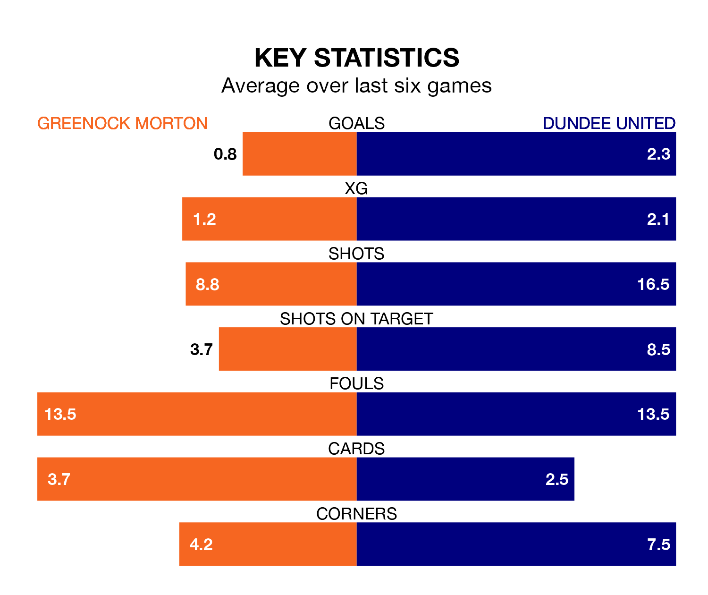

Two of the Championship's meanest defences go head-to-head at Cappielow Park on Friday, when Dundee United visit Greenock Morton.
No teams have conceded fewer goals than Dundee to date: the away side have let in just 21 goals in 32 games.
The Ton have conceded 38 goals in 32 games, giving them the fourth tightest back line so far this season.
Key to the Terrors' home form has been Jack Walton, who has allowed 0.63 goals past him per 90 minutes, compared to 0.7 for Ryan Mullen in the opposite net.
Dundee are top of the table after 32 games, of which they have won 19 and drawn eight, earning 65 points.
Greenock Morton are five places behind United in sixth, with 11 wins and eight draws putting them on 41 points.
In Louis Moult, the Terrors have one of the league's sharpest shooters so far this season. He has notched 16 goals in 29 appearances, to sit second in the scoring charts.
His goal rate of one every 129 minutes is quicker than that of Robbie Muirhead, the Ton's top scorer with a goal every 229 minutes, and a total of 11 goals in 29 games.
In the last 10 years, Greenock Morton and Dundee have played each other on 19 occasions. Greenock Morton won four of them, Dundee seven, and they drew eight times.
On average, the Ton scored 1.1 goals and the Terrors 1.4 in those matches.
Their last meeting was on March 5, when Dundee won 1-0 away.
The hosts are in bad form in the Championship, with one win and a draw from their last six games.
With four wins and a draw over that period, the away side's form is much better – they have taken 13 points from 18, compared to Greenock Morton's four.
Greenock Morton's last match was on Tuesday, a 1-1 draw against Ayr United, with Kirk Broadfoot getting the goal for the Ton.
Dundee beat Queen's Park 5-0 last time out, on Saturday, with Kai Fotheringham (two), Craig Sibbald, Moult and Ross Graham on the scoresheet.
Updated: 10:01 (UTC), 12/04/24